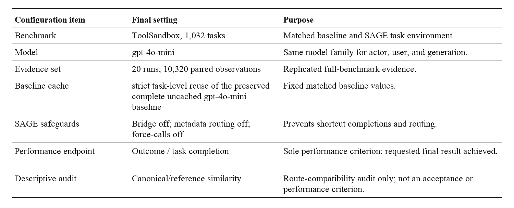
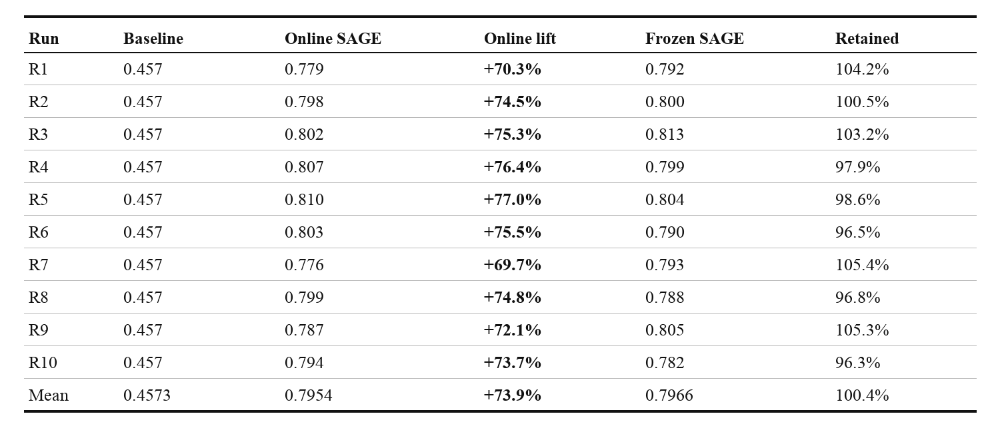
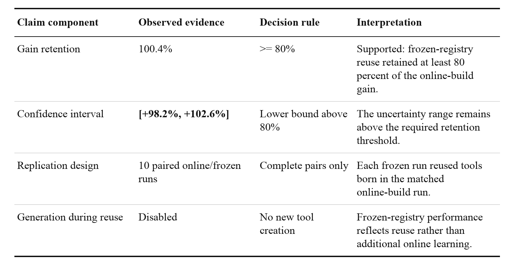
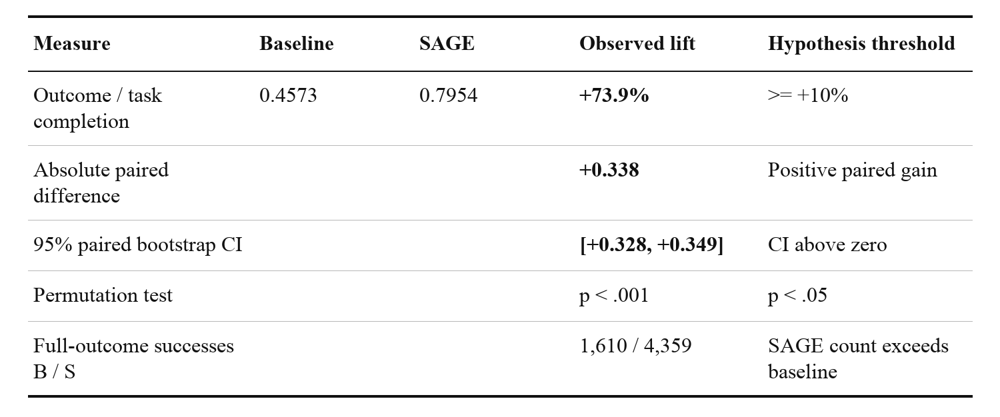
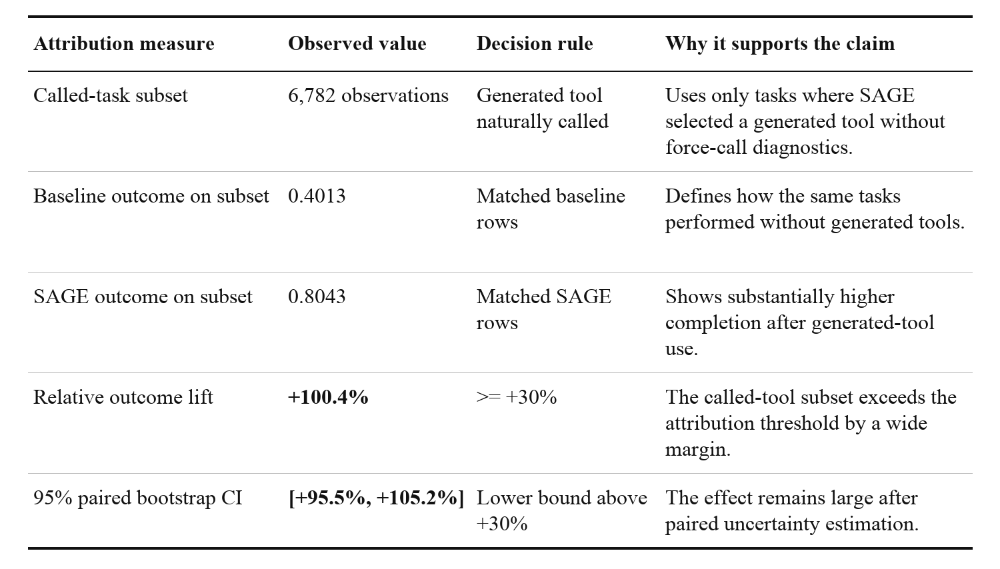
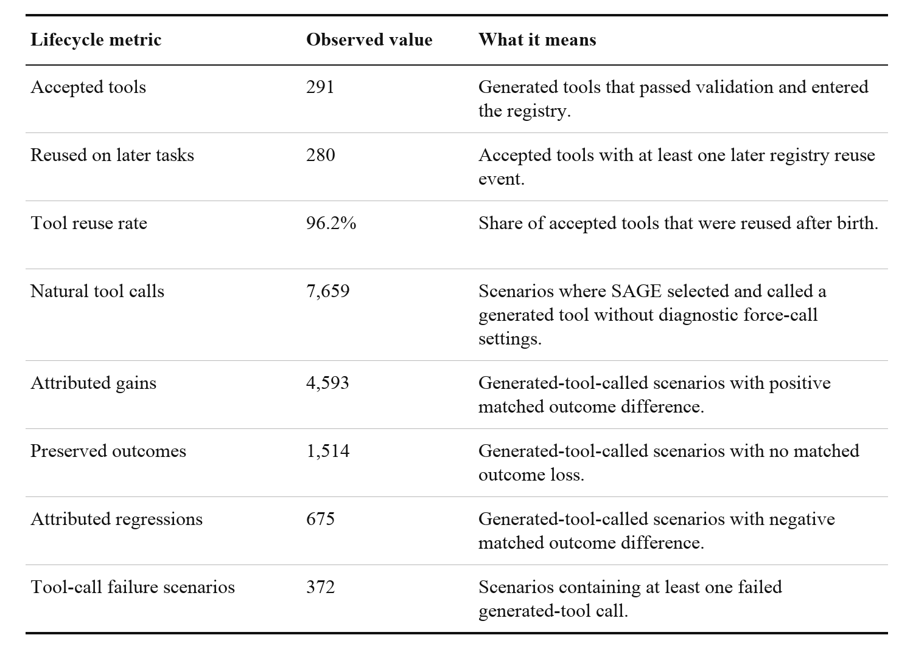
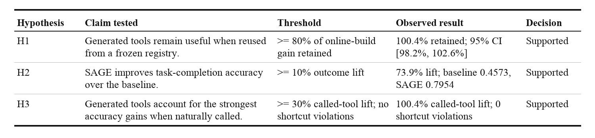
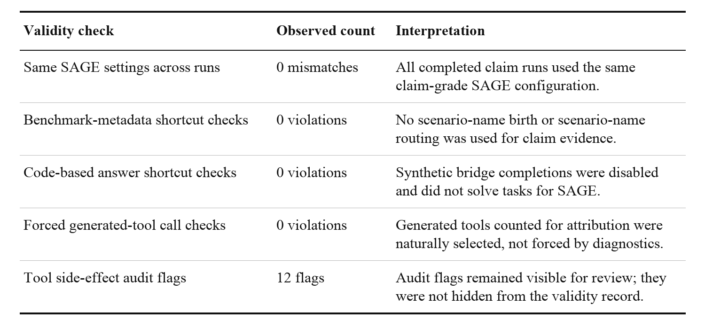
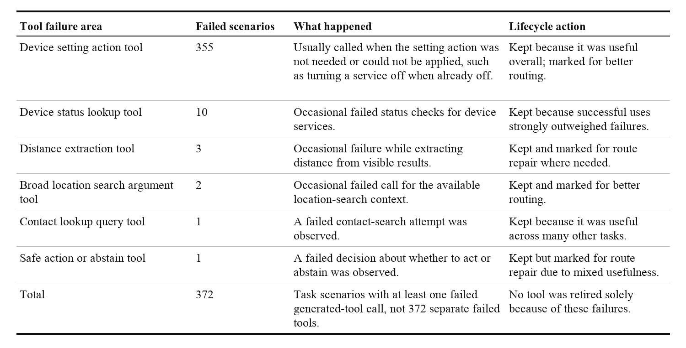

Chapter 4 Evidence Table Images

table_4_1_evidence_campaign.png

table_4_2_replication_results.png

table_4_3_h1_frozen_registry_retention.png

table_4_4_h2_overall_task_completion.png

table_4_5_h3_generated_tool_attribution.png

table_4_6_generated_tool_lifecycle.png

table_4_8_hypothesis_decision_summary.png

table_4_7_validity_checks.png

table_4_9_generated_tool_failure_summary.png